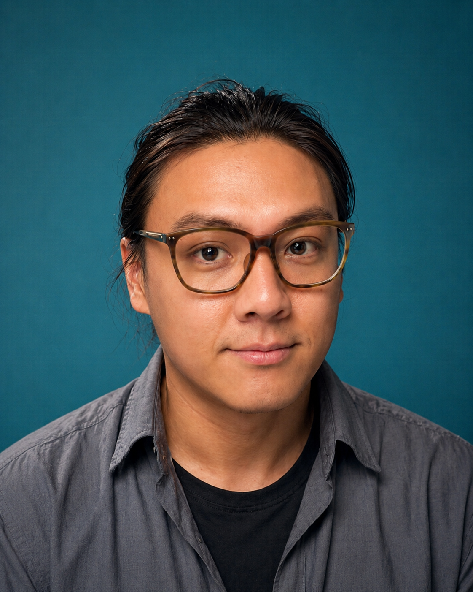
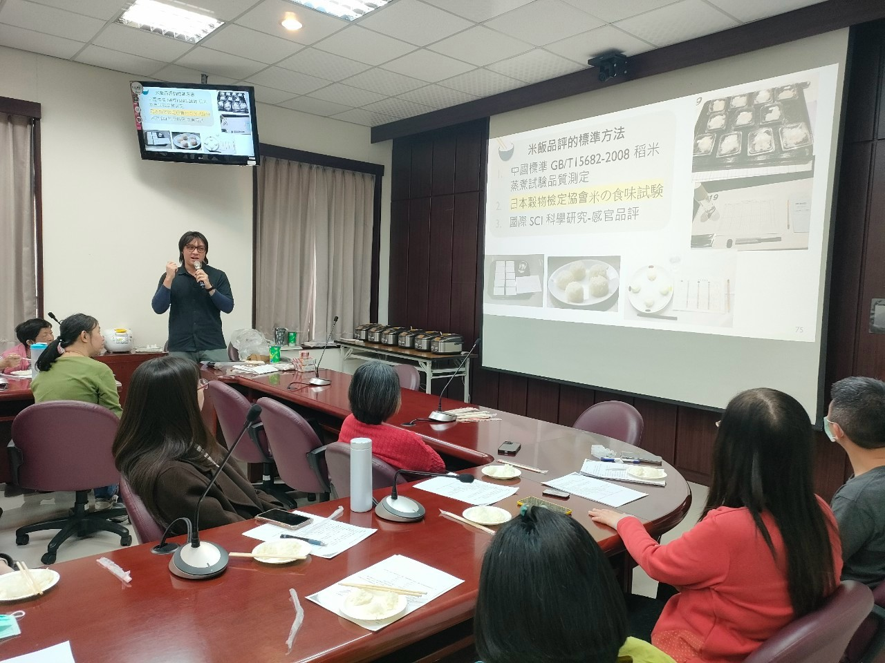
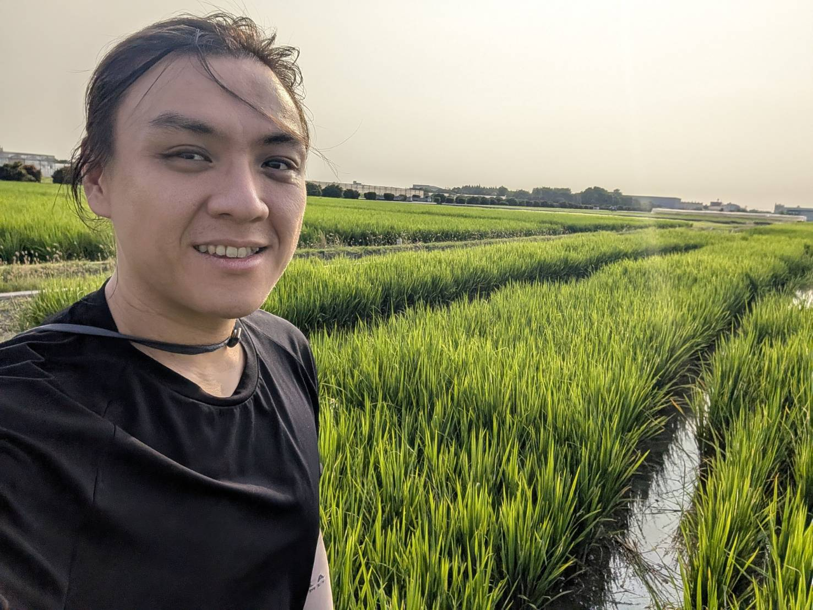
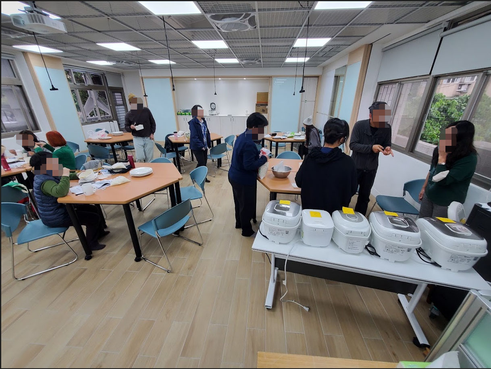

形式 01
稻米品種與品質基礎講座
介紹臺灣水稻品種、品種差異與稻米品質內涵，不含現場米飯品評。適合一般消費者、食農教育、社區大學及推廣活動。
建議 60–90 分鐘

LI CHENG-HONG · LEVI
農業部臺中區農業改良場助理研究員，具農藝學、遺傳育種背景，從事水稻栽培、稻米品質研究。
課程內容以學術文獻、專業教科書、田間與米質試驗及稻米產業實務為基礎，並依邀請單位需求與聽眾背景調整內容。
介紹臺灣水稻品種、品種差異與稻米品質內涵，不含現場米飯品評。適合一般消費者、食農教育、社區大學及推廣活動。
介紹品種與品質，搭配 3–5 種米飯進行實際品評、比較或盲測。最低約 30 分鐘講授＋30 分鐘品評與討論。
可納入 CNS 白米外觀品質、粒型判讀、不同品種或處理樣本比較、盲測設計、米飯官能評分及品評資料整理與分析。
若安排米飯品評，會涉及前置炊煮、器材、樣本、場地用電與現場分送，建議在邀約初期一併確認。
需確認米樣、秤量、洗米、加水、炊煮、電子鍋設定、樣品編碼與品評流程，原則上至少提前約 1 小時。
單次品評建議 3–5 種，一種樣品用一個電子鍋，可配合主辦單位提供，或事前由講師提出品種建議及電子鍋借用方案。
主辦單位需確認插座配置、延長線及電路負載，確保多台電子鍋可安全同時使用，並預留分樣與品評空間。
含 3–5 種品評時，建議至少 1 名助教或工作人員，協助洗米、炊煮、盛裝、分送、搬運與活動後整理。
以臺中區農業改良場至活動地點之實際必要路程估算。高鐵、火車、捷運等覈實；自用汽車必要路程按每公里 3 元估算。
包含品評盤子、筷子、標籤等，可由主辦單位準備，或編列助教費，由助教代為處理。
可依邀請單位會計規定調整。
可依參與者背景與邀請單位需求調整比例與深度，不拘泥於固定講綱。
介紹水稻馴化、臺灣品種發展與特色，以及品種如何影響外觀、質地、香氣與食用方式。
涵蓋外觀、碾米、理化、蒸煮與食味品質，說明直鏈澱粉、蛋白質、澱粉糊化及栽培、收穫、乾燥、儲藏等因素。
介紹樣品準備、盲樣、順序，以及外觀、香氣、口味、硬度、黏性、彈性與總評等感官特性。
依需求加入其他稻米有關講題，如 CNS 外觀品質、粒型判讀、不同栽培處理比較等。



照片使用講師本人確認可公開使用之原始素材；YouTube 以原影片嵌入，第三方活動頁保留原始來源連結。
上述內容均依邀請單位要求調整。若安排米飯品評，需提早確認場地、參與人數、米樣器材與協助人力。
lemax112@gmail.com